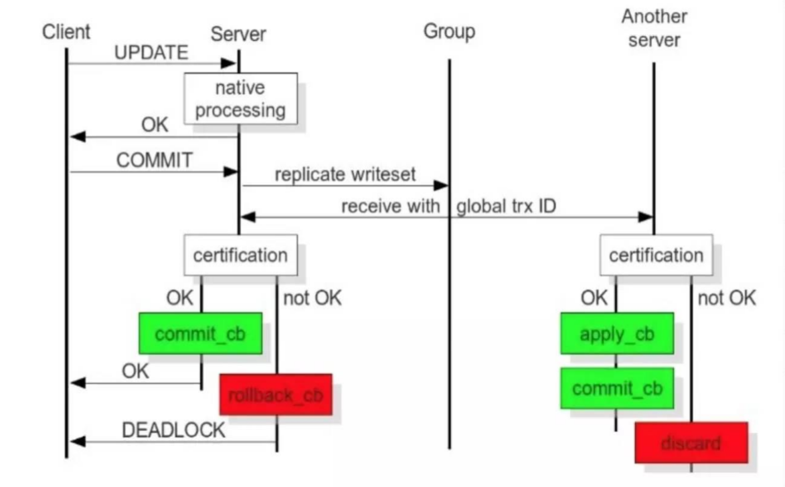

Galera Cluster简介
Galera Cluster是集成了Galera插件的MySQL集群，是一种新型的，数据不共享的，高度冗余的高可用方案，目前Galera Cluster有两个版本，分别是Percona Xtradb Cluster和MariaDB Cluster，Galera本时是具有多主特性，即采用Multi-master的集群架构，是一个即稳健，又在数据一致性、完整性及高性能方面有出色表现的高可用解决方案
Galera Cluster内部机制

Galera Cluster种每个MySQLServer之间相互为主主的关系，当客户端发送指令到一个数据库时，数据库将数据修改后返回一个OK，表示用户的请求已经被收到，但是事务并没有结束依旧可以撤销。当事务结束时用户发送一个commit(提交)，服务器收到后会将数据的更新发送给其他的MySQLServer，此时会开启一个全局性的事务ID给组内的其他服务器，其他服务器会查看是否有事务冲突，如果没有冲突就确认更改成功。
Galera Cluster特点
多主架构：真正的多点读写的集群，在任何时候读写数据都是最新的
同步复制：集群不同节点之间数据同步，没有延迟，在数据库挂掉之后，数据不会丢失
并发复制：从节点APPLY数据时，支持并行执行有更好的性能。
故障切换：数据库故障时，因为支持多点写入，切换容易
热插拔：在服务期间，如果数据库挂了，只要监控程序发现的够快，不可服务的时间就会非常少。在节点故障期间，节点本身对集群的影响非常小
自动节点克隆： 在新增节点，或者停机维护时，增量数据或者基础数据不需要人工手动备份提供，Galera Cluster会自动拉取在线节点数据，最终集群会变为一直
对应用透明：集群的维护，对应用程序是透明的
Galera Cluster搭建
环境准备
准备3台msyql服务器
| 主机名 |
ip地址 |
| node1 |
192.168.73.110 |
| node2 |
192.168.73.111 |
| node3 |
192.168.73.112 |
一、配置YUM源
在每个节点上配置YUM源
1
2
3
4
5
| [root@node1 ~]
[mysql]
name=galera cluster
baseurl=http://mirrors.neusoft.edu.cn/mariadb//mariadb-10.0.38/yum/centos7-amd64/
gpgcheck=0
|
二、安装MariaDB-Galera-server
在每个节点上安装MariaDB-Galera-server
三、修改配置文件
配置文件在/etc/my.cnf.d/server.cnf，有必须设置和可选设置两个配置
1
2
3
4
5
6
7
8
9
10
11
|
wsrep_provider=
wsrep_cluster_address=
binlog_format=row
|
对每个节点配置文件进行修改，此处以node1为例
1
2
3
4
5
6
7
8
9
| [root@node1 ~]
[galera]
wsrep_provider=/usr/lib64/galera/libgalera_smm.so
wsrep_cluster_address="gcomm://192.168.73.110,192.168.73.111,192.168.73.112"
binlog_format=row
default_storage_engine=InnoDB
innodb_autoinc_lock_mode=2
bind-address=0.0.0.0
|
四、启动服务
第一个启动的节点需要添加–wsrep-new-cluster选项，说明这是一个新的集群，其余节点启动服务无需添加参数
node2节点启动服务
node3节点启动服务
五、测试
1.测试同步
从node1导入数据库
node2查看
1
2
3
4
5
6
7
8
9
10
| [root@node2 ~]
+--------------------+
| Database |
+--------------------+
| hellodb |
| information_schema |
| mysql |
| performance_schema |
| test |
+--------------------+
|
node3查看
1
2
3
4
5
6
7
8
9
10
| [root@node3 ~]
+--------------------+
| Database |
+--------------------+
| hellodb |
| information_schema |
| mysql |
| performance_schema |
| test |
+--------------------+
|
2.测试冲突
同时在3节点创建表
在node2节点成功，其余节点都失败
1
2
| [root@node2 ~]
[root@localhost ~]
|
node1节点
1
2
| [root@node1 ~]
ERROR 1050 (42S01) at line 1: Table 'test' already exists
|
node3节点
1
2
| [root@node3 ~]
ERROR 1050 (42S01) at line 1: Table 'test' already exists
|
其他
Galera Cluster系统和状态变量
1.查看状态变量:SHOW STATUS LIKE ‘wsrep_%’
1
2
3
4
5
6
7
8
9
10
11
12
13
14
15
16
17
18
19
20
21
22
23
24
25
26
27
28
29
30
31
32
33
34
35
36
37
38
39
40
41
42
43
44
45
46
47
48
49
50
51
52
53
54
55
56
57
58
59
60
61
62
63
64
65
66
| MariaDB [(none)]> SHOW STATUS LIKE 'wsrep_%';
+------------------------------+-------------------------------------------------------------+
| Variable_name | Value |
+------------------------------+-------------------------------------------------------------+
| wsrep_local_state_uuid | e9f07cd3-7253-11e9-b27e-174ea2b4587d |
| wsrep_protocol_version | 9 |
| wsrep_last_committed | 38 |
| wsrep_replicated | 36 |
| wsrep_replicated_bytes | 18960 |
| wsrep_repl_keys | 144 |
| wsrep_repl_keys_bytes | 2016 |
| wsrep_repl_data_bytes | 14522 |
| wsrep_repl_other_bytes | 0 |
| wsrep_received | 12 |
| wsrep_received_bytes | 1782 |
| wsrep_local_commits | 6 |
| wsrep_local_cert_failures | 0 |
| wsrep_local_replays | 0 |
| wsrep_local_send_queue | 0 |
| wsrep_local_send_queue_max | 1 |
| wsrep_local_send_queue_min | 0 |
| wsrep_local_send_queue_avg | 0.000000 |
| wsrep_local_recv_queue | 0 |
| wsrep_local_recv_queue_max | 1 |
| wsrep_local_recv_queue_min | 0 |
| wsrep_local_recv_queue_avg | 0.000000 |
| wsrep_local_cached_downto | 1 |
| wsrep_flow_control_paused_ns | 0 |
| wsrep_flow_control_paused | 0.000000 |
| wsrep_flow_control_sent | 0 |
| wsrep_flow_control_recv | 0 |
| wsrep_cert_deps_distance | 1.000000 |
| wsrep_apply_oooe | 0.000000 |
| wsrep_apply_oool | 0.000000 |
| wsrep_apply_window | 1.000000 |
| wsrep_commit_oooe | 0.000000 |
| wsrep_commit_oool | 0.000000 |
| wsrep_commit_window | 1.000000 |
| wsrep_local_state | 4 |
| wsrep_local_state_comment | Synced |
| wsrep_cert_index_size | 82 |
| wsrep_causal_reads | 0 |
| wsrep_cert_interval | 0.026316 |
| wsrep_open_transactions | 0 |
| wsrep_open_connections | 0 |
| wsrep_incoming_addresses | 192.168.73.110:3306,192.168.73.111:3306,192.168.73.112:3306 |
| wsrep_cluster_weight | 3 |
| wsrep_desync_count | 0 |
| wsrep_evs_delayed | |
| wsrep_evs_evict_list | |
| wsrep_evs_repl_latency | 0/0/0/0/0 |
| wsrep_evs_state | OPERATIONAL |
| wsrep_gcomm_uuid | e9efec79-7253-11e9-8e15-9f3e0cc2d8a1 |
| wsrep_cluster_conf_id | 3 |
| wsrep_cluster_size | 3 |
| wsrep_cluster_state_uuid | e9f07cd3-7253-11e9-b27e-174ea2b4587d |
| wsrep_cluster_status | Primary |
| wsrep_connected | ON |
| wsrep_local_bf_aborts | 0 |
| wsrep_local_index | 0 |
| wsrep_provider_name | Galera |
| wsrep_provider_vendor | Codership Oy <info@codership.com> |
| wsrep_provider_version | 25.3.25(r3836) |
| wsrep_ready | ON |
| wsrep_thread_count | 2 |
+------------------------------+-------------------------------------------------------------+
|
2.查看系统变量:SHOW VARIABLES like ‘wsrep_%’\G;
1
2
3
4
5
6
7
8
9
10
11
12
13
14
15
16
17
18
19
20
21
22
23
24
25
26
27
28
29
30
31
32
33
34
35
36
37
38
39
40
41
42
43
44
45
46
47
48
49
50
51
52
53
54
55
56
57
58
59
60
61
62
63
64
65
66
67
68
69
70
71
72
73
74
75
76
77
78
79
80
81
82
83
84
85
86
87
88
89
90
91
92
93
94
95
96
97
98
99
100
101
102
103
104
105
106
107
108
109
110
111
112
113
114
115
116
117
118
119
120
121
122
123
124
125
126
| MariaDB [(none)]> SHOW VARIABLES like 'wsrep_%'\G;
*************************** 1. row ***************************
Variable_name: wsrep_auto_increment_control
Value: ON
*************************** 2. row ***************************
Variable_name: wsrep_causal_reads
Value: OFF
*************************** 3. row ***************************
Variable_name: wsrep_certification_rules
Value: strict
*************************** 4. row ***************************
Variable_name: wsrep_certify_nonpk
Value: ON
*************************** 5. row ***************************
Variable_name: wsrep_cluster_address
Value: gcomm://192.168.73.110,192.168.73.111,192.168.73.112
*************************** 6. row ***************************
Variable_name: wsrep_cluster_name
Value: testcluster
*************************** 7. row ***************************
Variable_name: wsrep_convert_lock_to_trx
Value: OFF
*************************** 8. row ***************************
Variable_name: wsrep_data_home_dir
Value: /var/lib/mysql/
*************************** 9. row ***************************
Variable_name: wsrep_dbug_option
Value:
*************************** 10. row ***************************
Variable_name: wsrep_debug
Value: OFF
*************************** 11. row ***************************
Variable_name: wsrep_desync
Value: OFF
*************************** 12. row ***************************
Variable_name: wsrep_dirty_reads
Value: OFF
*************************** 13. row ***************************
Variable_name: wsrep_drupal_282555_workaround
Value: OFF
*************************** 14. row ***************************
Variable_name: wsrep_forced_binlog_format
Value: NONE
*************************** 15. row ***************************
Variable_name: wsrep_load_data_splitting
Value: ON
*************************** 16. row ***************************
Variable_name: wsrep_log_conflicts
Value: OFF
*************************** 17. row ***************************
Variable_name: wsrep_max_ws_rows
Value: 0
*************************** 18. row ***************************
Variable_name: wsrep_max_ws_size
Value: 2147483647
*************************** 19. row ***************************
Variable_name: wsrep_mysql_replication_bundle
Value: 0
*************************** 20. row ***************************
Variable_name: wsrep_node_address
Value: 192.168.73.110
*************************** 21. row ***************************
Variable_name: wsrep_node_incoming_address
Value: AUTO
*************************** 22. row ***************************
Variable_name: wsrep_node_name
Value: node1
*************************** 23. row ***************************
Variable_name: wsrep_notify_cmd
Value:
*************************** 24. row ***************************
Variable_name: wsrep_on
Value: ON
*************************** 25. row ***************************
Variable_name: wsrep_osu_method
Value: TOI
*************************** 26. row ***************************
Variable_name: wsrep_provider
Value: /usr/lib64/galera/libgalera_smm.so
*************************** 27. row ***************************
Variable_name: wsrep_provider_options
Value: base_dir = /var/lib/mysql/; base_host = 192.168.73.110; base_port = 4567; cert.log_conflicts = no; cert.optimistic_pa = yes; debug = no; evs.auto_evict = 0; evs.causal_keepalive_period = PT1S; evs.debug_log_mask = 0x1; evs.delay_margin = PT1S; evs.delayed_keep_period = PT30S; evs.inactive_check_period = PT0.5S; evs.inactive_timeout = PT15S; evs.info_log_mask = 0; evs.install_timeout = PT7.5S; evs.join_retrans_period = PT1S; evs.keepalive_period = PT1S; evs.max_install_timeouts = 3; evs.send_window = 4; evs.stats_report_period = PT1M; evs.suspect_timeout = PT5S; evs.use_aggregate = true; evs.user_send_window = 2; evs.version = 0; evs.view_forget_timeout = P1D; gcache.dir = /var/lib/mysql/; gcache.keep_pages_size = 0; gcache.mem_size = 0; gcache.name = /var/lib/mysql//galera.cache; gcache.page_size = 128M; gcache.recover = no; gcache.size = 128M; gcomm.thread_prio = ; gcs.fc_debug = 0; gcs.fc_factor = 1.0; gcs.fc_limit = 16; gcs.fc_master_slave = no; gcs.max_packet_size = 64500; gcs.max_throttle = 0.25; gcs.recv_q_hard_limit = 9223372036854775807; gcs.recv_q_soft_limit = 0.25; gcs.sync_donor = no; gmcast.listen_addr = tcp://0.0.0.0:4567; gmcast.mcast_addr = ; gmcast.mcast_ttl = 1; gmcast.peer_timeout = PT3S; gmcast.segment = 0; gmcast.time_wait = PT5S; gmcast.version = 0; ist.recv_addr = 192.168.73.110; pc.announce_timeout = PT3S; pc.checksum = false; pc.ignore_quorum = false; pc.ignore_sb = false; pc.linger = PT20S; pc.npvo = false; pc.recovery = true; pc.version = 0; pc.wait_prim = true; pc.wait_prim_timeout = PT30S; pc.weight = 1; protonet.backend = asio; protonet.version = 0; repl.causal_read_timeout = PT30S; repl.commit_order = 3; repl.key_format = FLAT8; repl.max_ws_size = 2147483647; repl.proto_max = 9; socket.checksum = 2; socket.recv_buf_size = 212992;
*************************** 28. row ***************************
Variable_name: wsrep_recover
Value: OFF
*************************** 29. row ***************************
Variable_name: wsrep_replicate_myisam
Value: OFF
*************************** 30. row ***************************
Variable_name: wsrep_restart_slave
Value: OFF
*************************** 31. row ***************************
Variable_name: wsrep_retry_autocommit
Value: 1
*************************** 32. row ***************************
Variable_name: wsrep_slave_fk_checks
Value: ON
*************************** 33. row ***************************
Variable_name: wsrep_slave_threads
Value: 1
*************************** 34. row ***************************
Variable_name: wsrep_slave_uk_checks
Value: OFF
*************************** 35. row ***************************
Variable_name: wsrep_sst_auth
Value:
*************************** 36. row ***************************
Variable_name: wsrep_sst_donor
Value:
*************************** 37. row ***************************
Variable_name: wsrep_sst_donor_rejects_queries
Value: OFF
*************************** 38. row ***************************
Variable_name: wsrep_sst_method
Value: rsync
*************************** 39. row ***************************
Variable_name: wsrep_sst_receive_address
Value: AUTO
*************************** 40. row ***************************
Variable_name: wsrep_start_position
Value: 00000000-0000-0000-0000-000000000000:-1
*************************** 41. row ***************************
Variable_name: wsrep_sync_wait
Value: 0
41 rows in set (0.00 sec)
|